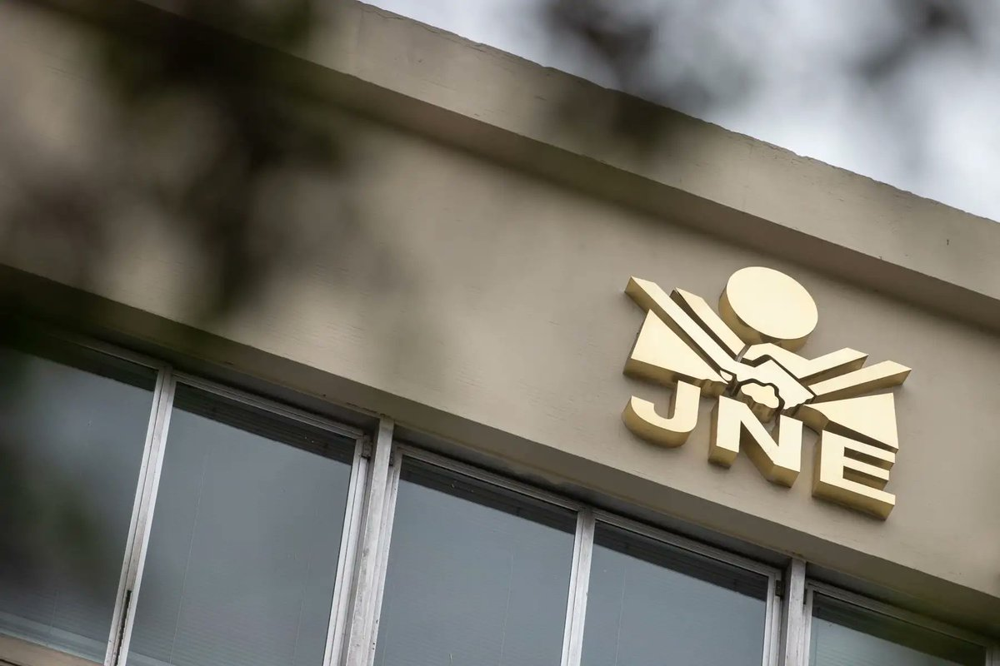

Ejercicio Académico - Diseño Crossmedia
Mantente informado sobre los últimos acontecimientos en el ámbito político.
Congreso de Colombia aplaza debates de reformas clave ante proximidad de comicios presidenciales

Perú entra en recta final para elecciones generales bajo estricta vigilancia internacional
Líderes globales se reúnen en Colombia para la Cumbre Glocal de Economía Circular.